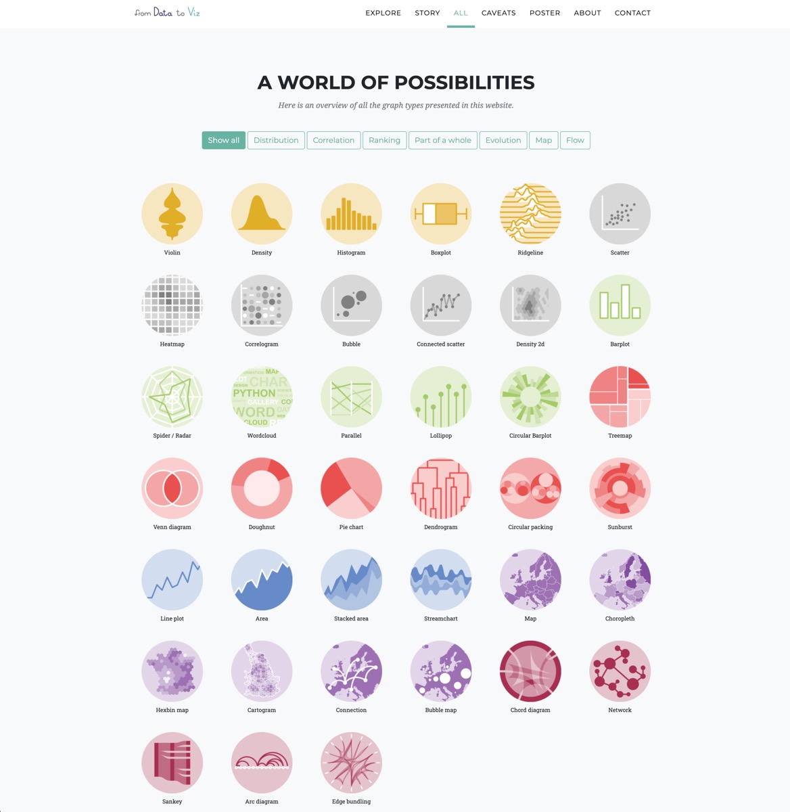
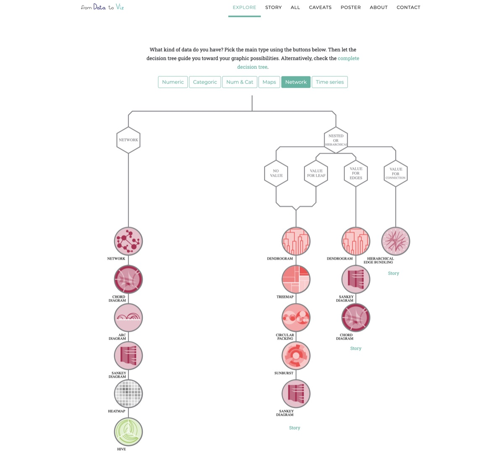

<!DOCTYPE html>
<html lang="zh-CN">
<head>
<meta charset="UTF-8">
<meta name="viewport" content="width=device-width, initial-scale=1.0">
<meta name="sciviz-promo" content="no=12;date=2026-04-13;id=012-data-to-viz">
<title>No.012 · Data to Viz：先选对图，再谈画法</title>
<style>
:root{
  --ink:#16202f;--ink2:#3d4c66;--muted:#6b7a94;
  --line:#e7ecf4;--line2:#f1f4fa;
  --brand:#5a6fe0;--brand2:#8a5ae0;--tint:#eef1ff;
}
*{box-sizing:border-box}
body{margin:0;background:#f6f8fc;color:var(--ink);
  font:17px/1.9 -apple-system,BlinkMacSystemFont,"PingFang SC","Hiragino Sans GB",
       "Microsoft YaHei",system-ui,sans-serif;-webkit-text-size-adjust:100%;
  font-kerning:normal}
.post{max-width:768px;margin:0 auto;background:#fff;min-height:100vh;
  box-shadow:0 0 0 1px var(--line)}

/* ---- 标题区 ---- */
.hero{padding:40px 30px 28px;
  background:linear-gradient(165deg,var(--tint) 0%,#fff 70%)}
.kicker{display:flex;flex-wrap:wrap;align-items:center;gap:8px;
  font-size:12px;color:var(--muted);letter-spacing:.02em}
.no{display:inline-block;padding:2px 10px;border-radius:999px;
  background:var(--brand);color:#fff;font-weight:700;letter-spacing:.06em}
.dot{width:3px;height:3px;border-radius:50%;background:#c3cddf}
.hero h1{margin:16px 0 12px;font-size:1.78rem;line-height:1.4;
  letter-spacing:-.01em}
.lede{margin:0;color:var(--ink2);font-size:.98rem;padding-left:13px;
  border-left:3px solid var(--tint)}
.chips{display:flex;flex-wrap:wrap;gap:6px;margin-top:18px}
.chip{padding:2px 10px;border-radius:999px;background:var(--line2);
  color:var(--ink2);font-size:12px}

/* ---- 正文 ---- */
.body{padding:8px 30px 40px}
section{padding-top:6px}
h2{position:relative;margin:34px 0 12px;padding-left:14px;
  font-size:1.16rem;line-height:1.5}
h2::before{content:"";position:absolute;left:0;top:.45em;bottom:.45em;width:4px;
  border-radius:2px;background:linear-gradient(180deg,var(--brand),var(--brand2))}
h3{margin:24px 0 9px;font-size:1.01rem;line-height:1.6;color:var(--ink)}
h3::before{content:"";display:inline-block;width:6px;height:6px;border-radius:2px;
  background:var(--brand);margin-right:9px;vertical-align:2px;opacity:.75}
h4{margin:20px 0 8px;font-size:.94rem;line-height:1.6;color:var(--ink)}
h4::before{content:"";display:inline-block;width:5px;height:5px;border-radius:1px;
  background:var(--brand2);margin-right:8px;vertical-align:2.5px;opacity:.6}
p{margin:0 0 15px;color:var(--ink2)}
ul{margin:0 0 15px;padding-left:22px;color:var(--ink2)}
li{margin:0 0 7px}
li::marker{color:var(--brand)}
strong,b{color:var(--ink);font-weight:600}
em{font-style:normal;color:var(--ink);
  background:linear-gradient(transparent 62%,var(--tint) 62%)}
sup{font-size:.72em;color:var(--muted)}

/* ---- 配图 ---- */
figure{margin:22px 0 24px}
figure img{display:block;width:100%;height:auto;border:1px solid var(--line);
  border-radius:10px;background:#fff}
figcaption{margin-top:9px;font-size:12.5px;line-height:1.7;color:var(--muted);
  text-align:center}

/* ---- 表格 ---- */
.table-wrap{overflow-x:auto;margin:18px 0 20px;border:1px solid var(--line);
  border-radius:10px;-webkit-overflow-scrolling:touch}
table{width:100%;border-collapse:collapse;font-size:.85rem;line-height:1.65;
  color:var(--ink2);background:#fff}
thead th{background:var(--tint);color:var(--ink);font-weight:600;text-align:left;
  padding:9px 14px;border-bottom:2px solid var(--brand);white-space:nowrap}
td{padding:9px 14px;border-bottom:1px solid var(--line);vertical-align:top}
tbody tr:last-child td{border-bottom:0}
tbody tr:nth-child(even){background:#fafbff}
td code{white-space:nowrap}

/* ---- 行内代码与代码块 ---- */
code{font-family:ui-monospace,"SF Mono",SFMono-Regular,Menlo,Consolas,"Courier New",monospace;
  font-size:.82em;background:var(--line2);border:1px solid var(--line);border-radius:4px;
  padding:.1em .4em;color:#9d3b5d;word-break:break-word}
pre{margin:18px 0 20px;padding:15px 18px;background:#141a2e;color:#d9e2f5;
  border-radius:10px;overflow-x:auto;font-size:13px;line-height:1.75;
  font-family:ui-monospace,"SF Mono",Menlo,Consolas,"Courier New",monospace;
  -webkit-overflow-scrolling:touch}
pre code{display:block;background:none;border:0;padding:0;color:inherit;
  font-size:inherit;white-space:pre;word-break:normal}
pre .c{color:#6b7a9e}
pre .k{color:#8fb4ff}
pre .s{color:#9ad1a4}

/* ---- 引言与提示框 ---- */
blockquote{margin:16px 0 18px;padding:12px 16px;border-left:4px solid var(--brand);
  background:var(--tint);border-radius:0 10px 10px 0;color:var(--ink)}
blockquote p{margin:0 0 6px;color:var(--ink)}
blockquote p:last-child{margin:0}
.note{margin:16px 0 18px;padding:12px 16px;border-radius:10px;font-size:.92rem;
  line-height:1.8;border:1px solid var(--line);background:#fafbff;color:var(--ink2)}
.note p{margin:0 0 6px}
.note p:last-child{margin:0}
.note-warn{border-color:#f3d9a4;background:#fdf8ee;color:#6b5618}
.note-warn strong,.note-warn b{color:#8a6d1f}
.note-tip{border-color:#cfe8d8;background:#f2faf5;color:#2e5e41}
.note-tip strong,.note-tip b{color:#2e5e41}

/* ---- 参考文献 ---- */
.refs{margin:18px 0 0;padding:18px 0 0;border-top:1px dashed var(--line);
  list-style:none;counter-reset:ref;font-size:.82rem;color:var(--muted)}
.refs li{counter-increment:ref;margin:0 0 9px;padding-left:30px;position:relative;
  line-height:1.7}
.refs li::before{content:"["counter(ref)"]";position:absolute;left:0;top:0;
  color:var(--brand);font-weight:600;font-variant-numeric:tabular-nums}
.refs em{background:none;color:inherit}

/* ---- 其它 ---- */
hr{border:0;border-top:1px dashed var(--line);margin:26px 0}

/* ---- 页脚 ---- */
.tail{margin:0 30px;padding:18px 0 40px;border-top:1px solid var(--line);
  display:flex;flex-wrap:wrap;gap:10px;justify-content:space-between;
  font-size:12px;color:var(--muted)}

@media (max-width:640px){
  body{font-size:16.5px}
  .hero{padding:28px 18px 22px}
  .hero h1{font-size:1.46rem}
  .body{padding:6px 18px 32px}
  .tail{margin:0 18px}
}


/* ---- 外链 ---- */
.body a{color:var(--brand);text-decoration:none;border-bottom:1px solid var(--line);word-break:break-all}
.body a:hover{color:var(--brand2);border-bottom-color:var(--brand2)}
/* ---- 参考文献悬浮提示（样式源：index.html → assets/css/style.css 的 .tooltip：黑底白字/圆角6px/12px字号） ---- */
.ref-tip{position:fixed;z-index:1000;max-width:380px;padding:8px 12px;
  background:rgba(0,0,0,0.8);color:#ffffff;border-radius:6px;
  font-size:12px;line-height:1.7;pointer-events:none!important;
  opacity:0;visibility:hidden;transition:opacity .12s ease;
  white-space:normal;word-break:break-word}
.ref-tip.on{opacity:1;visibility:visible}
sup.ref-cite{cursor:help;padding:0 1px}
</style>
</head>
<body>
<article class="post">

  <header class="hero">
    <div class="kicker">
      <span class="no">No.012</span>
      <span>2026-04-13</span>
      <span class="dot"></span>
      <span>SciViz Kit · 推文与教程</span>
    </div>
    <h1>Data to Viz：先选对图，再谈画法</h1>
    <p class="lede">按数据结构倒推图型的决策树，R / Python / D3 三条实现路径都给了。</p>
    <div class="chips"><span class="chip">选图</span><span class="chip">决策树</span><span class="chip">R</span><span class="chip">Python</span></div>
  </header>

  <div class="body">
  <section>
    <h2>从数据到图形：先看数据形状，再选图型</h2>
    <p>选错图型，多半是因为先想「画什么好看」，而不是先看「手里是什么数据」。From Data to Viz 的方法是把选择倒过来：先识别数据形状——几个变量？分类还是连续？有没有时间或层次结构？——再让数据形状决定候选图型清单，最后按受众与版面从中挑一张。</p>
  </section>
  <section>
    <h2>From Data to Viz</h2>
    <p>学习R · Python · D3.js 的图表神器</p>
    <p>交互式决策树</p>
    <p>R/ggplot2 代码库</p>
    <p>Python/seaborn</p>
    <p>D3.js 交互范例</p>
    <p>专注三件事 · 不夸大</p>
    <p>data-to-viz 是一个免费开源的学习平台，核心价值：根据你的数据结构推荐最适合的图表，并提供可直接运行的 R、Python、D3.js 代码。它不是魔法，但能大幅提升你的学习效率。</p>
    <p>适合谁？R 初学者：复制 ggplot2 代码，修改数据即出图</p>
    <ul>
      <li>Python 数据人：对比 matplotlib / seaborn 实现</li>
      <li>前端可视化爱好者：D3 经典案例入门</li>
      <li>科研绘图：告别图表选择困难症</li>
    </ul>
    <p>核心工作流1. 选择数据类型（数值/类别）</p>
    <ul>
      <li>2. 决策树推荐图表 → 点进详情</li>
      <li>3. 复制 R/Python/D3 代码 → 改数据 → 成图</li>
    </ul>
    <figure><figcaption>决策树：从「几个变量、什么类型」一路问到底</figcaption></figure>
    <p>官网首页：根据数据类型推荐可视化方案</p>
    <p>图表决策树 &amp; 代码仓库 →</p>
    <p><a href="https://www.data-to-viz.com" target="_blank" rel="noopener">https://www.data-to-viz.com</a> · 完全免费</p>
    <p>根据数据类型筛选图表</p>
  </section>
  <section>
    <h2>Numeric · Categoric · Network · Time series</h2>
    <p>数值变量分布</p>
    <p>类别比较</p>
    <p>网络关系</p>
    <p>时间序列</p>
    <p>Numeric</p>
    <p>直方图 · 密度图等</p>
    <p>Categoric</p>
    <p>条形图 · 饼图等</p>
    <p>Network</p>
    <p>网络图 · 和弦图等</p>
    <p>时间序列</p>
    <p>折线图等</p>
    <p>示例：Categoric 数据</p>
    <figure><figcaption>主界面：按需求筛选图型</figcaption></figure>
    <p>每个图表页都有R/Python/D3切换</p>
    <p>同一图表，三种语言代码对照学习，轻松掌握可视化迁移能力。</p>
    <p>访问 data-to-viz 决策树，点击任意节点即可进入对应图表详情页，一键复制代码。</p>
    <p>← 首页总览</p>
    <p>学习工作流 →</p>
    <p>学习工作流 · 复制-修改-出图</p>
  </section>
  <section>
    <h2>站在巨人肩膀：从模板到自己的图表</h2>
    <p>典型学习路径 (以R语言为例)</p>
    <ul>
      <li>打开 <a href="https://data-to-viz.com" target="_blank" rel="noopener">data-to-viz.com</a> → 决策树选择数据形状（例如“两个数值变量”）</li>
      <li>推荐散点图 + 边际分布 → 点击进入详情页</li>
      <li>找到「R code」区块，复制全部代码 → 粘贴至RStudio</li>
      <li>若缺包：install.packages(&quot;tidyverse&quot;) 即可</li>
      <li>下载示例数据集，观察数据结构 → 将自己的数据转换成相同格式 → 替换</li>
      <li>Run！生成个性化图表 → 导出PDF/PNG用于论文或报告</li>
    </ul>
    <p>对于Python和D3.js，流程完全一致，只需切换到对应标签，告别“不知道图叫什么名字”的困境。</p>
    <p>data-to-viz 提供优质模板，但你需要具备基本的编程环境配置能力（R/Python基础）。复杂图表仍需阅读官方文档微调，但它绝对是入门和提升效率的加速器。</p>
    <p>建议配合tidyverse学习</p>
    <p>对比matplotlib官方示例</p>
    <p>开源社区持续更新</p>
    <p>总结：为什么值得收藏</p>
    <ul>
      <li>解决“选图困难”</li>
      <li>提供可复现代码</li>
      <li>三语对照学习</li>
      <li>完全免费</li>
    </ul>
    <p>无论你是R、Python还是D3爱好者，data-to-viz 都是一个极佳的起点与参考库。</p>
    <p>← 图表决策树</p>
    <p>访问官网</p>
    <p>开源项目 · 由 Yan Holtz &amp; Conor Healy 创建 | 帮助全球数据科学家高效可视化</p>
    <h3 class="refs-title">延伸阅读与参考文献</h3>
    <ol class="refs">
      <li>Holtz Y, Schindler M. From Data to Viz: leading to the most appropriate chart for your data. <a href="https://www.data-to-viz.com" target="_blank" rel="noopener">https://www.data-to-viz.com</a></li>
    </ol>

  </section>
  </div>

  <div class="tail">
    <span>SciViz Kit · 推文 No.012</span>
    <span>2026-04-13</span>
  </div>

</article>

<!-- 参考文献悬浮提示：hover 正文 sup 角标 → 按 index.html 规定的 .tooltip 样式复现参考文献详情 -->
<script>
(function(){
  'use strict';
  var refs = document.querySelectorAll('ol.refs > li');
  if (!refs.length) return;
  var tip = document.createElement('div');
  tip.className = 'ref-tip';
  tip.setAttribute('role', 'tooltip');
  document.body.appendChild(tip);
  function move(e){
    var w = tip.offsetWidth, h = tip.offsetHeight;
    var x = e.clientX + 14, y = e.clientY + 16;
    if (x + w > window.innerWidth - 8) x = e.clientX - w - 14;
    if (x < 8) x = 8;
    if (y + h > window.innerHeight - 8) y = e.clientY - h - 14;
    if (y < 8) y = 8;
    tip.style.left = x + 'px';
    tip.style.top = y + 'px';
  }
  function hide(){ tip.classList.remove('on'); }
  Array.prototype.forEach.call(document.querySelectorAll('.body sup, .post sup'), function (s) {
    var n = parseInt(s.textContent, 10);
    if (!(n >= 1 && n <= refs.length)) return;
    s.classList.add('ref-cite');
    s.addEventListener('mouseenter', function (e) {
      tip.textContent = '[' + n + '] ' + (refs[n-1].textContent || '').replace(/\s+/g, ' ').trim();
      tip.classList.add('on');
      move(e);
    });
    s.addEventListener('mousemove', move);
    s.addEventListener('mouseleave', hide);
  });
})();
</script>
</body>
</html>
